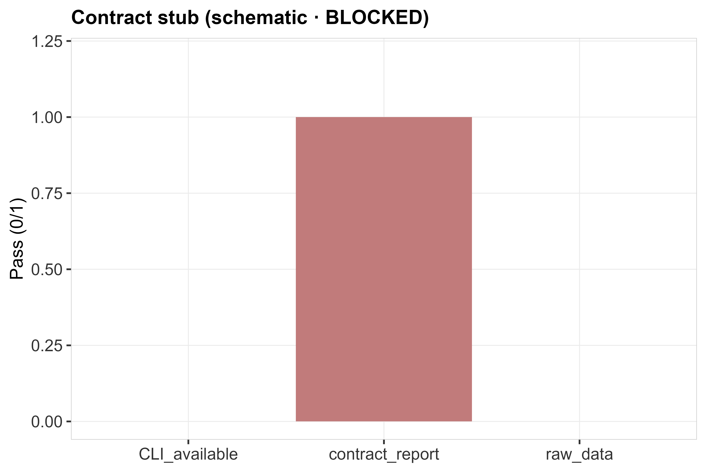

状态：BLOCKED — 需 AutoDock Vina/商业对接软件与受体准备流水线
已 source 本技能 脚本_scripts/: 运行骨架_runSkeleton.R
BLOCKED：本样例为契约桩（无真实数据），未产生任何模拟/分析数据；不得外推。
详见 数据文件/DATA_SOURCE.md。
"skill","stage","n_rows","n_cols","n_samples","group_source","toy","data_provenance","accession","sourced_skill_scripts","notes","checked_at" "MolecularDocking","post",3,3,0,"n/a BLOCKED",FALSE,"BLOCKED",NA,"已 source 本技能 脚本_scripts/: 运行骨架_runSkeleton.R","BLOCKED: 需 AutoDock Vina/商业对接软件与受体准备流水线","2026-08-30 17:17:55"

客观 BLOCKED：需 AutoDock Vina/商业对接软件与受体准备流水线。已产出合规命名图/审计/报告，状态不得标 PASS。
生成时间：2026-08-30 17:17:55 · 报告规范：统一交付规范_DeliveryStandards · 版本 v1